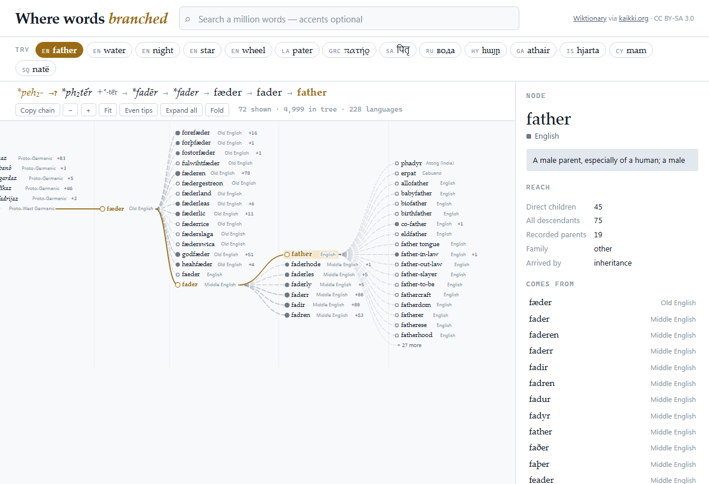

Etymology Tree is a project aimed at tracing and visualising the etymological descent of words. Given a word in any language, the tree walks back through the attested ancestors of that word to a reconstructed proto-form, then renders the full tree of forms descending from the same root. The current build covers 2,000,000 words across 4,502 languages and 1,375,000 definitions, extracted from the Wiktionary dump.
The main difficulty of the project was that etymology for words is often not a clean tree shape. Borrowing moves words sideways between branches, forms merge, and a single spelling can descend from two unrelated roots, so the underlying structure is a directed acyclic graph. To tackle this issue, word senses were keyed together (rather than spellings), which keeps homographs such as the two senses of bank as separate nodes instead of collapsing them into one. Search is accent-folding, so an ASCII query such as pater retrieves patḥr, patēr and pater together.
The resulting graph makes long borrowing chains legible. Whisky and water resolve to a common root, as do grammar and carve, the latter through Proto-Indo-European *gerbʰ-, “to scratch”, reflecting that writing began as marks scratched into a surface.